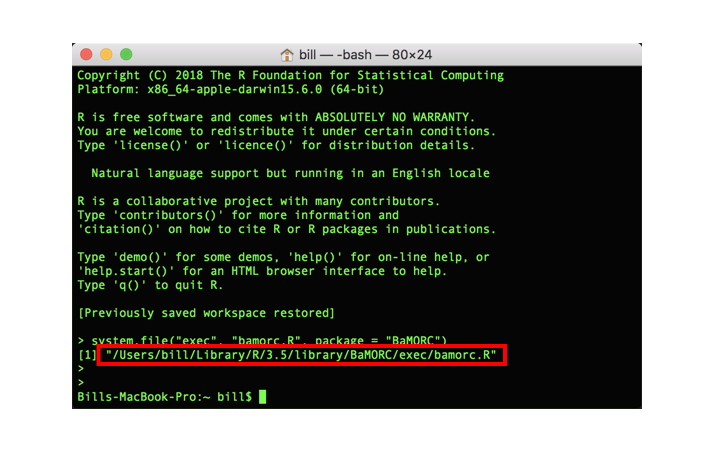

This document describes each command line function built into the BaMORC package.
CLIs vary widely. Before diving into the actual command, it is important to understand the general pattern of the CLI commands so that you can construct a complete and coherent command for utilizing BaMORC functions.
The key features of any CLI is the structure of the command. A CLI consists of the following patterns:
You need to be able to construct a command with these components in order to perform the desired CLI call.
BaMORC supports two type of CLI calls: innate R CMD BATCH, which supports all OS platforms, and Linux CLI.
To use “BaMORC CLI”, you need to find the CLI run-script. Open terminal and type the following code:
> R -e 'system.file("exec", "bamorc.R", package = "BaMORC")'You will see the R script location printed out in the terminal as shown in following image. 
The standard Linux CLI follows the Docopt convention.
CLI syntex: bamorc.R <job> <arguments>
Following job can be used:
assigned: calculate the reference correction value for assigned carbon-13 protein NMR spectra.unassigned: calculate the reference correction value for unassigned carbon-13 protein NMR spectra.valid_ids: print out all the valid BMRB entry IDs.Valid CLI commands are described below. We will explain the arguments in next session.
For assigned carbon-13 protein NMR spectra:
bamorc.R assigned (--table=<csv> | --bmrb=<bmrb> | --id=<id>) [--ppm_range=<range>] [--output=<output_filename>] [--delimiter=<delim>] [--report=<report_filename>]For assigned carbon-13 protein NMR spectra:
bamorc.R unassigned (--table=<csv>) (--seq=<sequence>) [--ppm_range=<range>] [--output=<output_filename>] [--delimiter=<delim>] [--report=<report_filename>] [--ssc=<path>]For printing out all valid IDs:
bamorc.R valid_ids=.The arguments are in -- or - format, for example --ppm_range=<value> and -h.
The helper commands are: * bamorc.R -h | --help: print out this CLI help information. * bamorc.R -v | --version: print out package version.
Other arguments are divided into required or optional:
--table=<csv> or --bmrb=<bmrb> or --id=<id>, just one of them.
--table=<csv>: Input file path (can be shortened as -s=<csv>)--bmrb: file path of input BMRB file--id=<id>: RefDB or BMRB ID. (can be shortened as -i=<id>)--seq=<sequence>: Sequence of protein of interest, if protein sequence file is not provided. (Can be shortened as -s=<sequence>)--table=<csv> and --seq=<sequence>.
--table=<csv>: Input file path (can be shortened as -s=<csv>)--seq=<sequence>: Sequence of protein of interest, if protein sequence file is not provided. (Can be shortened as -s=<sequence>)Optional arguments:
--delimiter=<delim>: Delimiter option can be ‘comma’, ‘tab’ and ‘whitespace’. (Can be shortened as -d=<delim>)--ppm_range=<range>: The ppm search range for reference correction value, default value is ‘-5,5’. (Can be shortened as -p=<range>)--output=<output_file_path>: File path of the output from BaMORC result in csv format. (Can be shortened as -o=<output_file_path>)--ssc=<ssc_path>: Spin system creater, default value is moseleybioinformaticslab/ssc. (Can be shortened as -g=<ssc_path>)--report=<report_file_path>: Correction value report output file path. (Can be shortened as -r=<report_file_path>)> ./path-of-r-script/bamorc.R assigned --id=4020 --ppm_range=(-1,1) --output=./output/output.csv --report=./output/report.txt> ./path-of-r-script/bamorc.R assigned --table=./input.csv --ppm_range=(-1,1) --output=./output/output.csv --report=./output/report.txt> ./path-of-r-script/bamorc.R unassigned --table=./input.csv --seq=GSIPCLLSPWSEWSDCSVTCGKGMRTRQRMLKSLAELGDCNEDLEQAEKCMLPECP --ppm_range=(-1,1) --output=./output/output.csv --report=./output/report.txtR language has its own CLI command pattern via the functionality of R CMD BATCH. At the very beginning of R history, R CMD BATCH was the function handle all the non-interactive calls through the shell.
The patters is simple: R CMD BATCH [arguments-to-pass] [path-of-script.R] $
Here arguments are in the - format, for example -ppm_range=<value>.